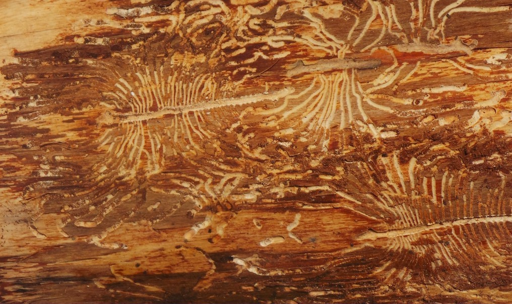

Relevant texts - location/description of image
>
( scroll with the rest of the page).
"At vero eos et accusamus et iusto odio dignissimos ducimus qui blanditiis
praesentium voluptatum deleniti atque corrupti quos dolores et quas
molestias excepturi sint occaecati cupiditate non provident, similique sunt
in culpa qui officia deserunt mollitia animi, id est laborum et dolorum

fuga. Et harum quidem rerum facilis est et expedita distinctio. Nam libero
tempore, cum soluta nobis est eligendi optio cumque nihil impedit quo minus
id quod maxime placeat facere possimus, omnis voluptas assumenda est, omnis

id quod maxime placeat facere possimus, omnis voluptas assumenda est, omnis
dolor repellendus. Temporibus autem quibusdam et aut officiis debitis aut
rerum necessitatibus saepe eveniet ut et voluptates repudiandae sint et
molestiae non recusandae. Itaque earum rerum hic tenetur a sapiente
delectus, ut aut reiciendis voluptatibus maiores alias consequatur aut
perferendis doloribus asperiores repellat."

 URL download image
URL download image
1914 translation by H. Rackham
"On the other hand, we denounce with righteous indignation and dislike men who are
so beguiled and demoralized by the charms of pleasure of the moment, so
blinded by desire, that they cannot foresee the pain and trouble that are
bound to ensue; and equal blame belongs to those who fail in their duty
through weakness of will, which is the same as saying through
shrinking from toil and pain. These cases are perfectly simple and easy to
distinguish. In a free hour, when our power of choice is untrammelled and
when nothing prevents our being able to do what we like best, every pleasure
is to be welcomed and every pain avoided. But in certain circumstances and
owing to the claims of duty or the obligations of business it will
frequently occur that pleasures have to be repudiated and annoyances
accepted. The wise man therefore always holds in these matters to this
principle of selection: he rejects pleasures to secure other greater
pleasures, or else he endures pains to avoid worse pains."